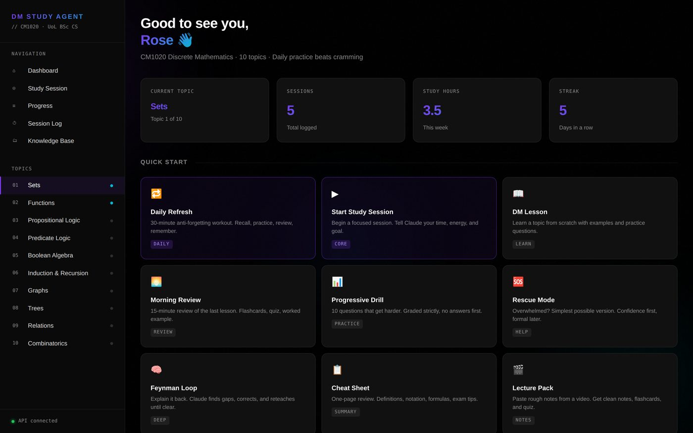

Work
Automated directory and email marketing pipeline for unclaimed events
A pipeline that turns scraped event listings into a published directory, then contacts the organizers behind them. Events are sorted by type and have their description, photo, contact details and social links filled in. Organizer emails are checked against a verification service before use. Listings publish unclaimed, and a four step email sequence invites each organizer to claim theirs.
Read the case study →Route distance calculator for open water swims with Python
Measures a planned route before anyone acts on it, for figures that get published and contested. Two routers: A* over a land mask grid with line-of-sight smoothing, and a maritime network for open crossings. Every leg is cross-checked against straight-line distance and falls back deterministically, with the method recorded per leg so the total can be read back rather than taken on trust.
Read the case study →
LLM study assistant built on Claude, with Drive and Notion sync
A browser-only app that streams from a model API, syncs to the user's own cloud storage, and writes to their workspace through a proxy holding the one secret the browser must never see. No backend, no build step. The proxy is locked by origin, shared key and a three-route allowlist, so a leaked URL cannot reach anything else.
Searchable KB wired into the troubleshooting workflow
A support practice accumulates a private history of solved cases that exists nowhere searchable, so the same symptom gets re-diagnosed from scratch. I built a retrieval layer from the structured notes the workflow already produced, so adoption cost was zero and the corpus grows on its own. Two rules do the real work: a hit is returned as a hypothesis to verify rather than a verdict, and a miss prints a receipt so silence is never mistaken for no prior case.
Other builds
Staged approval pipeline on PostgreSQL
Certification ran through a shared inbox. I mapped it first: 44 steps across six systems, a tracker updated by hand that nothing wrote to, three branches that ended the workflow with no route back in. The replacement holds its own state, so an application always has a status, and applies a fixed decision rule in the database rather than leaving the outcome to whoever replies first.
Content audit joining analytics to a 20,688 row inventory
An archive with no structure and no traffic data, joined against analytics so every article carries evidence rather than an opinion. Classification proven on a pilot before anything ran at scale.
Two-tier instruction design for a documentation agent
An agent that researches and writes reference guides for readers who cannot open the sources it researches from. Built by correction rather than specification: each fix on a real guide became a rule, split across a long context file and a short checklist verified before every response. The transferable finding is about regression, not guides. Rules silently vanished when the agent rewrote its own instructions, and two maintained copies drifted apart unnoticed for weeks.
Schema discovery and migration into Airtable
Ten thousand records in WordPress post meta with no trustworthy schema, accumulated through years of theme changes and hand entry. Rather than mapping the documented field list, I counted how many records actually carried each key. Frequency separated data from residue, and exposed a typo field on exactly one record, shadow copies too sparse to use, and three records quietly missing a value.
GPS track verification and gap detection
Verifies what a GPS track actually records. Matching legs by position rather than filename cut one route's apparent discontinuities from 24 to 9, and every exclusion is reported with coordinates so it can be contested specifically.
Filtered work digest on named-source retrieval
Working context arrived across team blogs, chat and an issue tracker faster than anyone could read it, and relevance is personal so no shared feed solves it. Built with no application code, just instructions over an authenticated integration layer. The most useful part is a failure: it silently missed an entire reorganization for weeks, the cause turned out to be retrieval rather than filtering, and the fix was to pull named sources on a fixed window instead of trusting an aggregate feed.